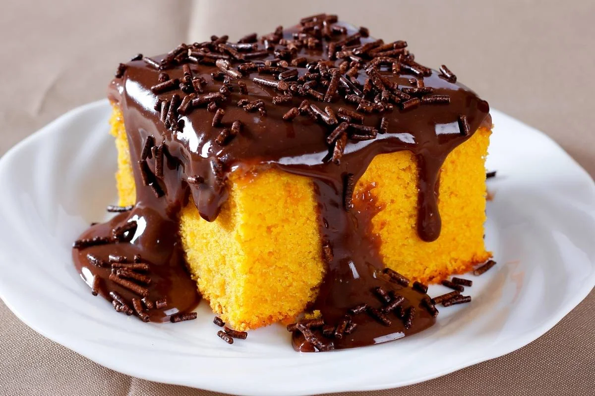
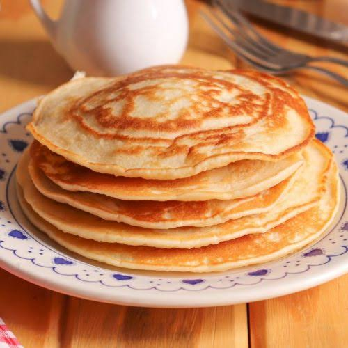

Bolo de Cenoura
Receita simples e saborosa para o café da tarde.
Ver receitaConfira algumas receitas para preparar em diferentes momentos.

Receita simples e saborosa para o café da tarde.
Ver receita
Uma receita especial para uma refeição em família.
Ver receita
Uma opção prática para o café da manhã ou lanche.
Ver receita